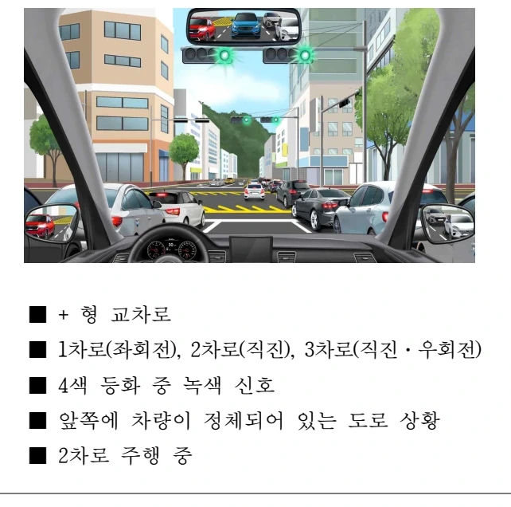

787. 在下列情况下，最安全的两种驾驶方法是？

- ①尽可能靠近前车行驶，以通过车辆较多的交叉路口。
- ②有必要防范突然从前面第三车道变道至左侧的车辆。
- ③无论前方车辆是否拥堵，都要驶入交叉路口，以确保交通顺畅。
- ④打开危险报警闪光灯，安全地直行驶入没有车辆的对面第一车道。
- ⑤如果由于拥堵而无法在绿灯时通过交叉路口，则在停止线前停车。
查看答案
答案
② 有必要防范突然从前面第三车道变道至左侧的车辆。
⑤ 如果由于拥堵而无法在绿灯时通过交叉路口，则在停止线前停车。
依据
十字路口的禁止停车区标线，表明由于车流量大，经常出现拥堵。即使信号灯是绿灯，也不能强行跟车进入，堵在路口，阻碍其他车辆通行。如果您预计要进入的十字路口会出现拥堵，请悠闲地驾驶，在停车线前停车，并在下一个绿灯处起步。您还需要小心从前方三车道突然改变方向到空荡荡的第二车道的车辆。
依据文字为学习用机器翻译。